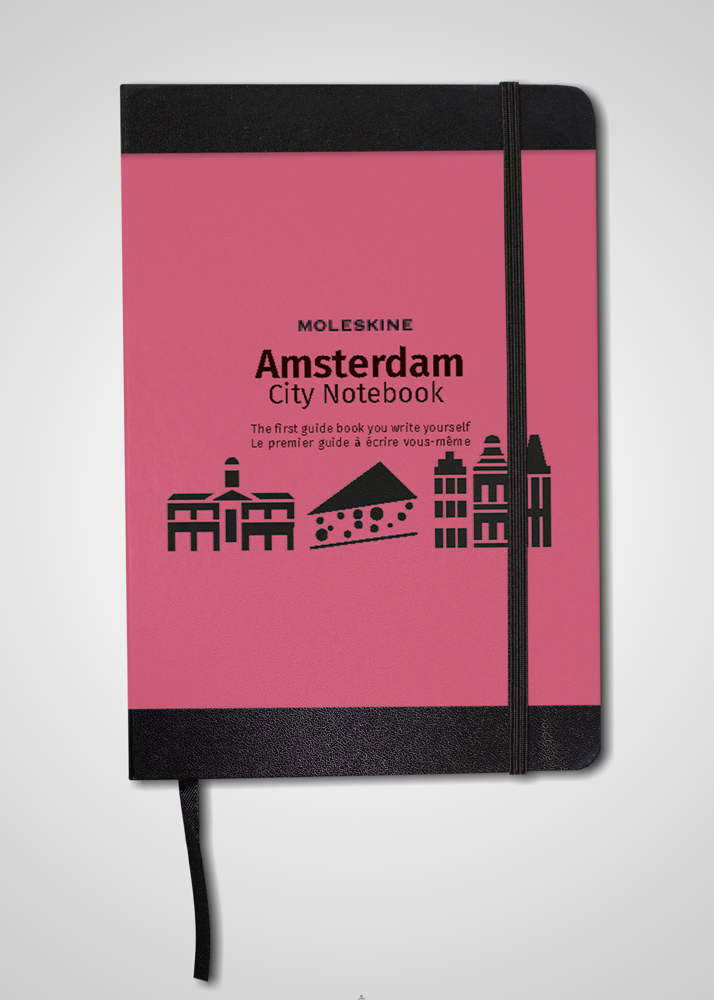
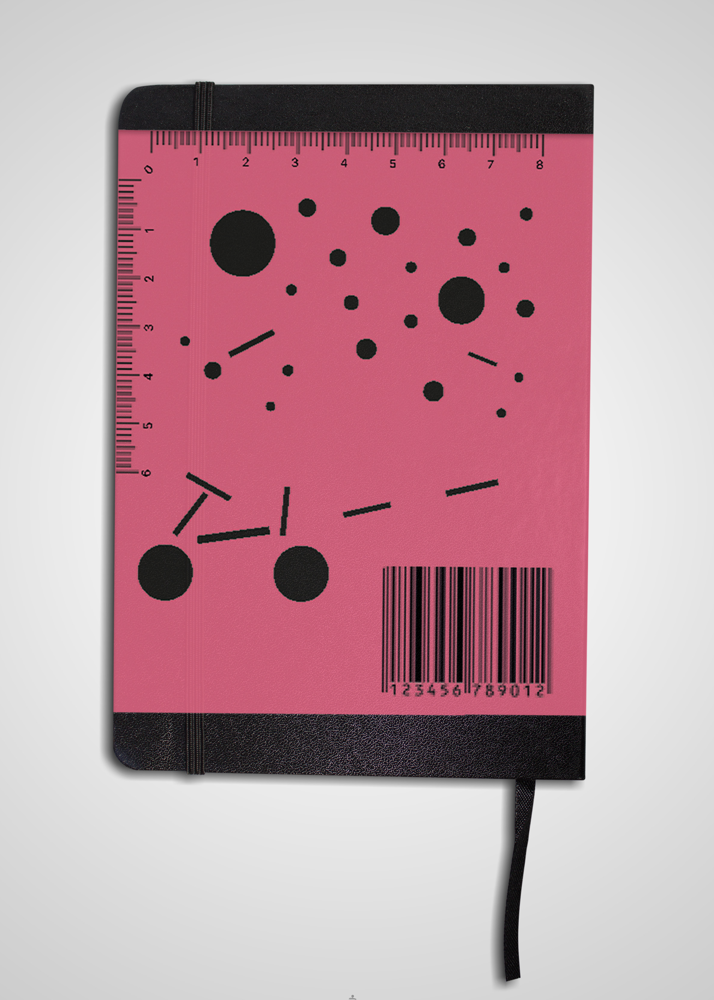
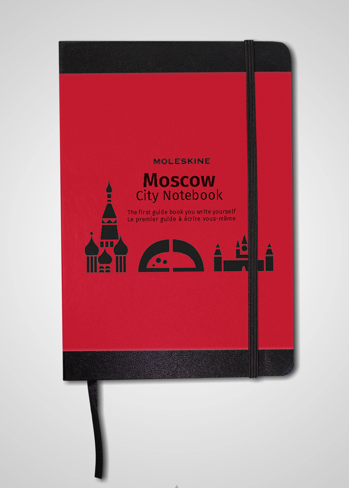
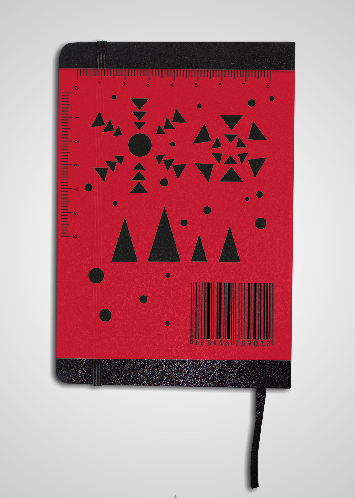
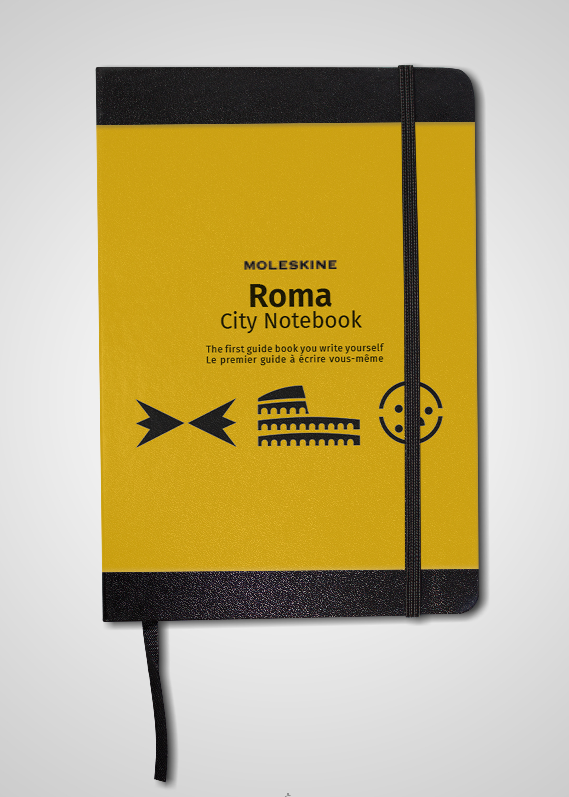
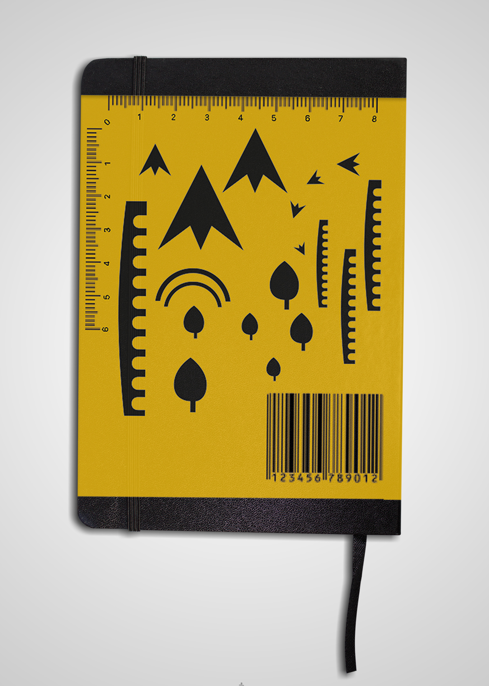

Repenser l’identité des bandeaux de la collection City Notebook de Moleskine, en donnant à voir la notion de voyage personnalisable.
Le voyage personnalisable évoque le fait d’aller au-delà d’un plan prédéfini, et au-delà des incontournables et clichés d’une ville. Je propose donc un bandeau qui incite le voyageur à s’approprier les clichés et incontournables d’une ville, présents à l’avant du bandeau comme une vision antérieure au voyage. Libre au voyageur de se les approprier au travers d’un normographe à l’arrière, qui reprend leurs formes, afin de personnaliser l’intérieur de son guide en s’en servant de pochoir. Son organisation sous forme d’un paysage reprenant encore d’autres codes de la ville, comme le vélo d’Amsterdam, sert d’exemple et d’impulseur créatif.
     